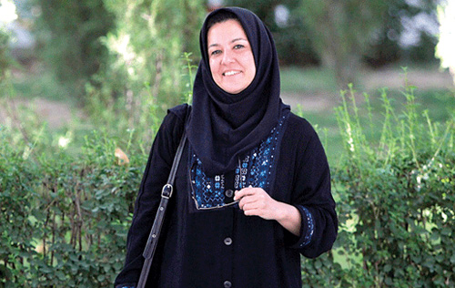

<div class="pages">
	<div data-page="projects" class="page no-toolbar no-navbar">
		<div class="page-content">
			<div class="navbarpages">
				<div class="navbar_home_link"><a href="hamayesh.html"></a></div>
				<div class="navbar_page_center">درباره همایش</div>
				<div class="menu_open_icon_white"><a href="#" class="open-panel"></a></div>
			</div>
			<div id="pages_maincontent">
				<h2 class="page_subtitle">سخن دبیر علمی همایش</h2>
			  
				<div class="post_single" >
					
					<p style="text-align:justify;direction:rtl;">
						سنت برگزاری همایش های ملی "پژوهش اجتماعی فرهنگی در جامعه ایران" در انجمن جامعه شناسی ایران به سال 1389 باز می گردد و در سال جاری  برای چهارمین بار توفیق یافته ایم تا این همایش را با همکاری و حمایت بیش از 40  نهاد علمی آموزشی و پژوهشی، انجمن علمی، موسسات و سازمان های دولتی و غیر دولتی تدارک ببینیم تا بستر مناسبی برای  تبادل یافته های پژوهشی، تبادل نظر و دریافت بازخورد، نقد تحلیلی مسایل و رویکردهای علمی روز و ارایه ی  دستاوردهای علمی و پژوهشی  فراهم شود؛  و اجتماعی علمی متشکل از دست اندرکاران و ذینفعان نظام آموزشی و پژوهشی، دانشگاهیان، فعالان و پژوهشگران عرصه ی علوم اجتماعی و انسانی از اقصی نقاط ایران گرد هم آیند.  این اهتمام جمعی، همواره درقالبِ همکاری و همیاری جامعه شناسان با صاحب نظران و پژوهشگرانی از خاستگاه های متنوع و متفاوت علمی و در واقع به صورت میان رشته‌ای و چند رشته‌ای محقق شده است. این گردهمایی فراگیر علمی، معطوف به طرح دستاوردهای پژوهشی، طرح مسائل تحقیق و بررسی موانع یا تسهیل کننده های تحقق پژوهش ها، معرفی  رویکردهای متاخر و جاری  در جریان پژوهش، و همچنین معطوف به گستره ی تولید و ترویج دانش، داده‌ها و یافته‌های کمی و کیفی  و سیاست گذاری های اجتماعی در ایران بوده است. همایش های ملی به ویژه آنها که در قالب همکاری نهادهای علمی- پژوهشی و اجرایی متنوع، ابعاد میان رشته ای نیز پیدا می کنند، فرصت و ظرفیت خوبی را برای هم افزایی علمی و ارتقای دانش و تحقق نگاه نقادانه به رویدادهای جامعه، فراهم می کند.
						<br>
						نخستین همایش ملی "پژوهش اجتماعی و فرهنگی در جامعه ایران" در سال 1389 با تاکید بر پیشینه و کارنامه پژوهش های اجتماعی فرهنگی در ایران برگزار شد  و از آن پس، هر دو سال یک بار به موازات  اجرای برنامه هفته پژوهش در ایران، با یک محور ویژه برگزار شده است. این محورهای ویژه در سال های 1391 و 1393 به ترتیب، جامعه شناسی مردم مدار و آینده پژوهی  بودند. چهارمین همایش ملی «پژوهش های فرهنگی اجتماعی در جامعه ایران»، مطابق با سنتی که دنبال شده است  دو محور عمومی و ویژه را جهت  فراخوان دریافت مقالات و تدارک برنامه های همایش پیش بینی کرده و موضوع منتخب امسال که به تصویب هیات مدیره انجمن جامعه شناسی ایران رسید موضوع "نابرابری و عدالت اجتماعی" بوده است که خوشبختانه با استقبال گسترده ای نیز روبرو شد. فراخوانی که در تابستان 1396 منتشر شد موضوعات محوری همایش را به شرح زیر معرفی کرد: 
						<br>
						1.   محورهای عمومی همایش
						<br>
						1-1 طرح و معرفی دستاوردهای پژوهش اجتماعی و فرهنگی در قلمروهای تخصصی جامعه شناسی نظیر جامعه شناسی دین، خانواده، تاریخی، زنان  و جنسیت، هنر، صلح، توسعه روستایی، اخلاق، اقتصادی، پزشکی و سلامت، احساسات، آینده پژوهی، سیاست اجتماعی، شبکه های اجتماعی، مسائل اجتماعی، و همچنین  در قلمروهای بین رشته ای و سایر رشته های علوم اجتماعی مانند مطالعات فرهنگی و ارتباطات، علوم سیاسی، جمعیت شناسی، انسان شناسی، مددکاری اجتماعی، رفاه اجتماعی، برنامه ریزی اجتماعی، و روان شناسی اجتماعی. 
						<br>
						1-2 جامعه شناسی پژوهش های اجتماعی و فرهنگی در ایران.
						<br>
						1-3 جایگاه طرح های ملی پژوهش اجتماعی و فرهنگی در سیاست گذاری¬ها و برنامه¬ریزی های توسعه           اجتماعی-اقتصادی
						<br>
						1-4 نقد و بررسی دستاوردهای نهادهای تحقیقاتی اثرگذار در عرصه پژوهش اجتماعی و فرهنگی. 
						<br>
						1-5 نقد و بررسی تجربیات و دستاوردهای پژوهشی نهادهای مدنی
						<br>
						1-6 کاربرد روش های کمی، کیفی و ترکیبی در پژوهش اجتماعی و فرهنگی ایران.
						<br>
						طی این فراخوان، موضوع ویژه همایش سال جاری نیز "نابرابری و عدالت اجتماعی"  تعریف شد. 
						<br>
						2.   محورهای موضوع  ویژه همایش: نابرابری و عدالت اجتماعی
						<br>
						2-1 قشربندی اجتماعی و انواع نابرابری های اجتماعی در جامعه ایران
						<br>
						2-2 تبیین نابرابری های اجتماعی در ایران
						<br>
						2-3 پیامدهای نابرابری های اجتماعی در جامعه ایران
						<br>
						2-4 آثار و پیامدهای سیاست گذاری بر نابرابری و عدالت اجتماعی
						<br>
						در پاسخ به فراخوان همایش سال جاری، علاوه بر تعداد کثیری از دانشگاهیان و دانشجویان و صاحب نظران علوم اجتماعی  در سراسر کشور، از همکاری ارزنده ی بسیاری از گروه های علمی- تخصصی انجمن جامعه شناسی ایران نیز برخوردار شدیم، همچنانکه تعداد کثیری از نهادهای مختلف علمی پژوهشی و اجرایی نیز ما را از حمایت مادی و معنوی خود بهره مند کردند که مجموعه ی همکاری ها در قالب برنامه ی مفصل سخنرانی های کلیدی، پنل های سخنرانی، و کارگاه های آموزشی متنوع  در جریان سه روز برگزاری همایش بازتاب یافته است. از مهم ترین دغدغه های ما در این همایش، گذشته از ارایه ی جدیدترین یافته های علمی حوزه علوم اجتماعی، انعکاس دستاوردهای جامعه شناسان از کلیه ی نقاط کشور با  تاکید  بر ابعاد ملی این گردهمایی و نیز فراهم آوردن فضایی برای انعکاس تلاش ها و دستاوردهای نسل جوان دانشگاهی و دانشجویان تحصیلات تکمیلی درعرصه ی پژوهش های اجتماعی و فرهنگی بوده است.  برای نخستین بار، بخش ارایه ی مقالات در "قالب پوستر" به بخش ارائه ی شفاهی همایش افزوده شده است تا آن دسته از مشارکت کنندگان که فرصت ارائه مطالبشان به صورت سخنرانی نبود ، از  امکان ارائه دستاوردهایشان به صورت پوستر برخوردار شوند  و فرصت تبادل نظر با مخاطبان شان را در جریان معرفی پوسترشان پیدا کنند. 
						<br>
						همزمان با برگزاری این همایش، مجمع سالیانه ی اعضای انجمن جامعه شناسی ایران نیز برگزار می شود. به علاوه یک مسابقه  عکاسی و نمایشگاه عکس هم برای عطف توجه بیش تر به  وضعیت جامعه و رویدادهای جاری کشور با محوریت موضوعات نابرابری، عدالت اجتماعی و همچنین زلزله  - با توجه به این که در سال جاری جامعه ایران با ضایعه فقدان و آسیب دیدگی شمار  قابل توجهی از هم وطنان در استان های مختلف کشور روبرو بوده است-  تدارک دیده شد.  
						<br>
						امید است که مجموعه مقالات منتخب همایش طی همکاری هیات های تحریریه و داوران فصلنامه های علمی پژوهشی انجمن جامعه شناسی و برخی نهادهای علمی همکار، پس از طی مراحل داوری علمی در ویژه نامه های نشریات تخصصی منتشر شوند.  
						<br>
						رویکرد هیات مدیره انجمن این است که همایش ها فرصتی برای تعامل بیشتر با همکاران دانشگاهی مختلف باشد، بنابراین تصمیم گرفته شد که همایش ها در دانشگاهای مختلف برگزار شود. در نتیجه، همایش سال جاری، برای اولین بار در محل دانشکده علوم اجتماعی دانشگاه علامه طباطبایی برگزار می شود که در اینجا از ریاست محترم دانشگاه علامه طباطبایی جناب آقای دکتر سلیمی، و حمایت همکار ارجمند جناب آقای دکتر تاج مزینانی ریاست دانشکده و معاونان ارجمند دانشکده سپاسگزاری می کنم. با توجه به استقبال گسترده و ابعاد وسیع تر همایش سال جاری نسبت به همایش های سال های پیش، این همایش طی سه روز پنجم، ششم و هفتم دی ماه سال جاری در چارچوب برنامه های متنوعی همزمان در شش سالن موازی که فعالیت ها را پوشش می دهد، برگزار می شود. در کتاب چکیده مقالات همایش که در دست دارید مجموعا 306 چکیده مقاله منتشر شده است که تعداد 194 چکیده در موضوعات محور عمومی و تعداد 112 مقاله در موضوع محوری همایش یعنی نابرابری و عدالت اجتماعی دریافت شده است. 
						<br>
						حضور فعال مجموعه ی وسیع  اعضای انجمن جامعه شناسی ایران، و نمایندگان سایر نهادهای همکار و حامی انجمن، عموم علاقمندان به علوم اجتماعی، اصحاب رسانه ها و همچنین تشکل های  دانشجویی و نظایر آن به ویژه از استان های مختلف کشور بر غنای این تجمع علمی ملی می افزاید.
						<br>
						در پایان به سهم خود، لازم می دانم از  پشتیبانی و همراهی های اعضای محترم هیات مدیره انجمن جامعه شناسی ایران، به ویژه جناب آقای دکتر سید حسین سراج زاده ریاست محترم انجمن، همکاری سرکار خانم دکتر سمیه توحیدلو دبیر محترم علمی محور ویژه همایش، همکاری مدیران محترم گروه های علمی تخصصی انجمن، همکاری ارزنده ی نمایندگان محترم نهادهای حامی و همکار انجمن در شورای علمی همایش که اسامی آنها در شناسنامه همایش آمده است، سرکار خانم مریم نوری زنوز مسئول محترم و تلاشگر دبیرخانه ی علمی همایش، تلاش ها و پیگیری های جناب آقای یونس اکبری دبیر اجرایی همایش، جناب آقای علیمراد عناصری مدیر بخش مسابقه عکاسی همایش و مجموعه ی همکاران علمی و اجرایی دبیرخانه همایش و کمیته ی برگزاری که ساعت ها وقت و تلاش صادقانه ی خود را مصروف فعالیت های متنوع پشتیبانی اداری، ویرایش متون کتاب همایش، پیگیری های مربوطه  و انواع هماهنگی ها و تدارکات برگزاری این همایش کرده اند، همچنین مسئول محترم دفتر انجمن جامعه شناسی ایران سرکار خانم ژیلا آور و مسئول پشتیبانی انجمن جناب آقای حمزه علی کشوری، همکاران گرامی مان در بخش های دیگر پشتیبانی و امور فنی و رسانه ای همایش، سرکار خانم فاطمه عزلتی مقدم، خانم ظریف مرادیان، خانم سپیده یادگار، خانم مرضیه پورتسوجی، آقای کیهان صفری و دانشجویان پرتلاش دانشکده علوم اجتماعی و علوم ارتباطات دانشگاه علامه طباطبایی که هر یک به نحوی ما را در برگزاری همایش در سطوح مختلف یاری داده اند سپاسگزاری کنم.
						<br>
						لازم به ذکر است که علی رغم تلاش های همه جانبه و مستمر من و مجموعه ی برگزار کننده ی همایش، قطعاً کمبودها و کاستی هایی در برگزاری شایسته و بایسته ی همایش هایی در این ابعاد پدید می آید، که امیدوار هستیم مشارکت کنندگان و حاضران در همایش  با  دیده ی خطاپوش خویش، قصور ناخواسته را بر ما ببخشایند و در عین حال، ما را با ارائه ی پیشنهادهایی برای رفع  اینگونه کاستی ها و کمبودها در برگزاری همایش های آینده انجمن جامعه شناسی ایران راهنمایی بفرمایند.  امید داریم کسب تجربه و امکان دریافت بازخورد از مشارکت کنندگان و مهمانان گرامی همایش، راهنما و راهگشای ما در مجموعه ی انجمن جامعه شناسی ایران، برای تلاش های سودمندتر  و موفقیت آمیز تر در آینده باشد. 
						<br>
						با امید به توسعه ی مشارکت موثر و حضور گسترده اعضای جامعه علمی و دانشگاهی، و پژوهش گران و اندیشمندان فرهیخته ایران از  رشته های گوناگون علمی به ویژه علوم انسانی و اجتماعی  در چنین مجامع علمی و رونق و رشد همه جانبه فعالیت های علمی و پژوهشی و تقویت نهادهای مربوطه و نهایتا ًدستیابی به توسعه به معنای واقعی آن در کشور؛ و با امید به دستیابی به رشد و اعتلای روزافزون علوم اجتماعی و پژوهش های اجتماعی فرهنگی در جامعه  ایران، به سهم خودم از شما که مخاطب این پیام هستید برای توجهی که داشتید، سپاسگزاری می کنم و برای انجمن جامعه شناسی ایران آرزوی بالندگی و رونق روزافزون و تداوم موثر فعالیت های علمی دارم. 
						<br>
						<br>
						<b>شیرین احمدنیا</b>
						<br>
						<b>دبیر علمی همایش، عضو هیات مدیره انجمن جامعه شناسی ایران و عضو هیات علمی دانشگاه علامه طباطبایی</b>
						<br>
						<b>دی ماه 1396</b>
					</p>
				</div>
			</div>
		</div>
	</div>
</div>